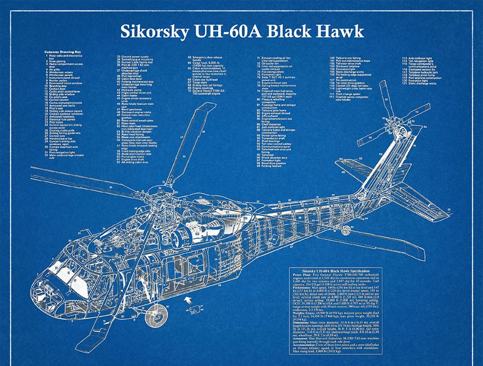

About Me
A little about my interests...
Twenty One
A SAW-esque blackjack game where trump cards can change the tide. You play against one other player (or a bot) in a game of blackjack to win your life.
In my leisure time, I play video games a lot. I enjoy playing them by myself or with family/friends. I have my own PC and I play mostly Valorant and Roblox. A Roblox game that I've gotten into recently is Twenty One, hover over the image to learn more. On my phone, I play CoDM and Delta Force. On my Xbox, I play some of CoD, Halo, Battlefield, Ghost Recon, etc. I do prefer playing on my PC just because I've been playing on PC since I was 7. However, I've played a lot less of games because of school and college applications.
I also enjoy playing soccer, whether it's by myself or with other people. Soccer is a good source of exercise and it's really entertaining to play. Even if you don't feel like playing soccer, watching soccer isn't entirely bad either. There's great footage of crazy shots taken by professionals or amateurs. I play center back, near the goalie. I serve as the deterrent so people have a hard time taking the shot and most of the time, I succeed in blasting the ball to the other side of the field. A soccer player I like is Son Heung-min. He's a professional player who originated from South Korea who currently plays for the LA football club.
 Another one of my interests has to be technology. A short story about how technology has basically been embedded into my life is my dad. Some time after I was born, he went abroad to the US to support my family in the Philippines but also to get us to the US. Every morning, my mom would call my dad and we would say hi and see how he's doiing. Aside from that, I've always been fascinated by the mechanisms within machinery and the technology running behind the scenes. I got into aerodynamics before I knew what the term for it was. I understood the idea of air friction/drag, downforce, etc. Eventually, this fostered for a deep lust to understand physics.
Goals
Building on my early curiosity for physics, my biggest goal (as of right now) is to attend a college and major in engineering. I have not decided on a specific type of engineering nor a school, but I am leaning towards mechanical or aerospace engineering. The two subsets of engineering are what I got into as a youngin. I think that having a job where I learn and handle the things I once dreamt of as a kid would make me a happy person. Aside from that, the paycheck is also enticing.